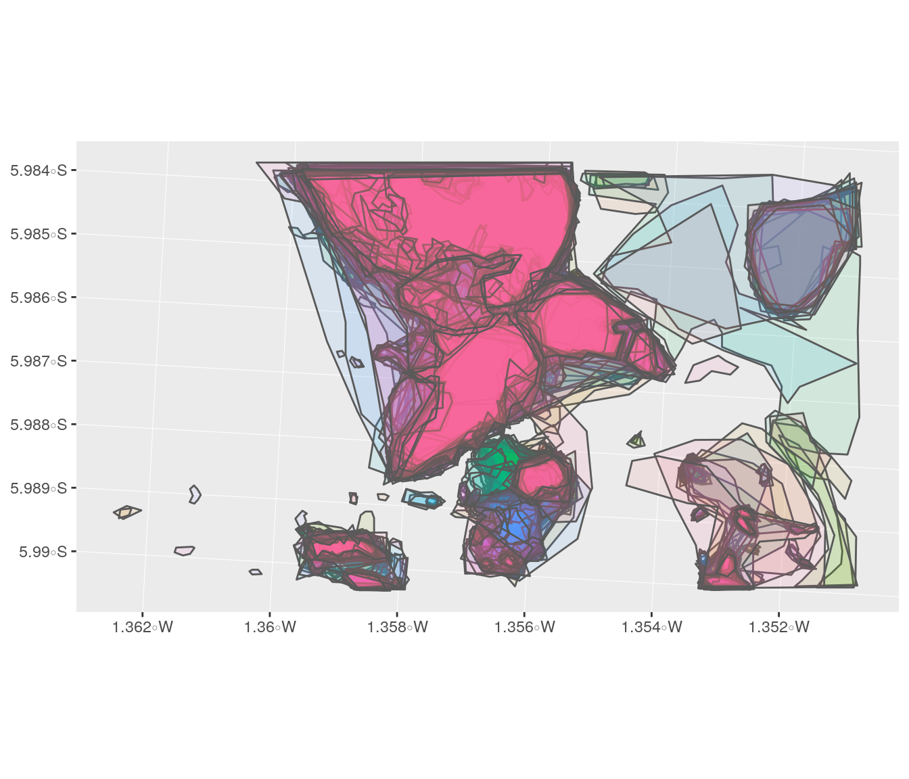
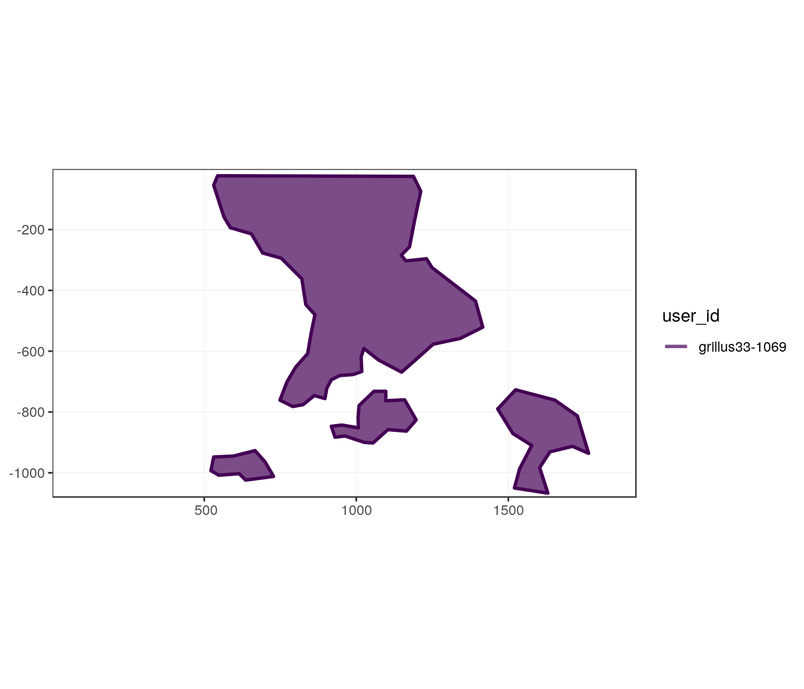
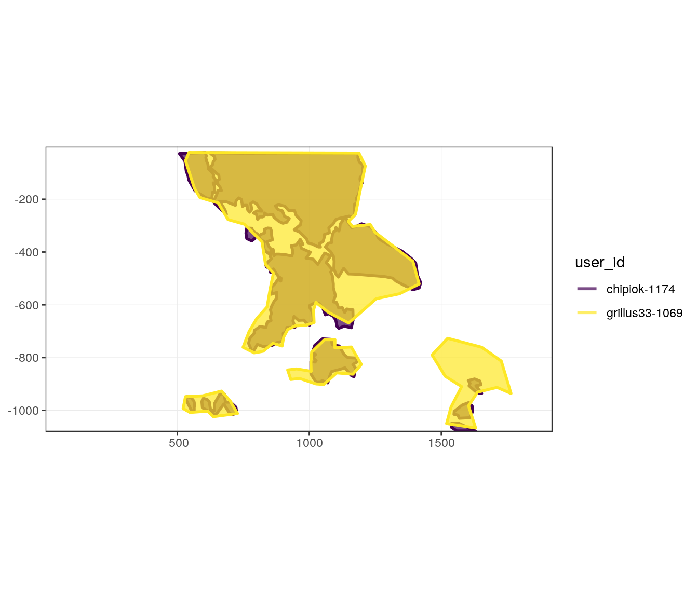
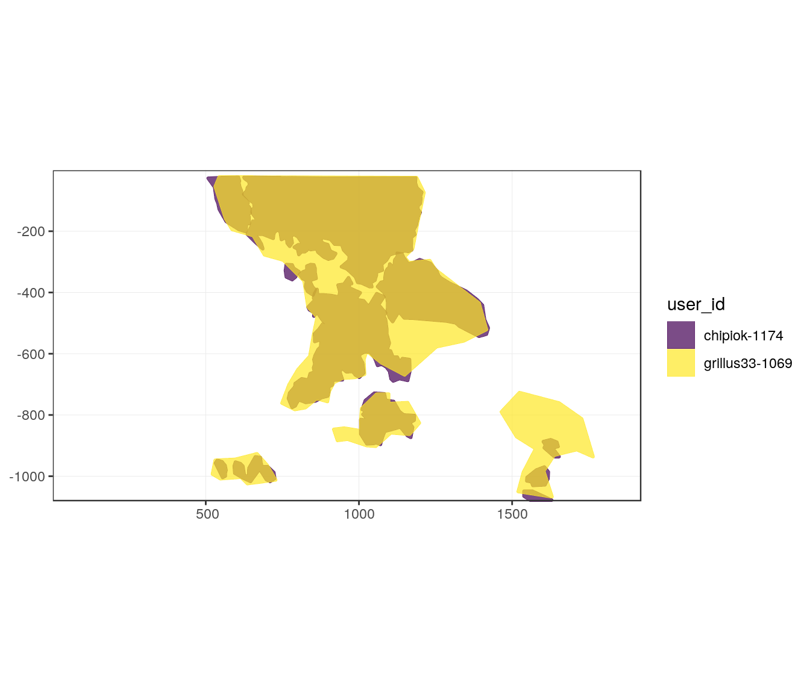
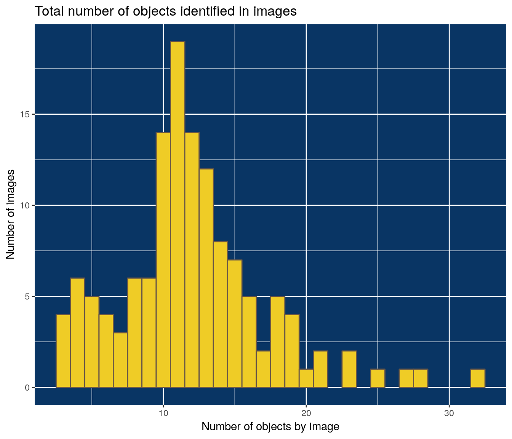
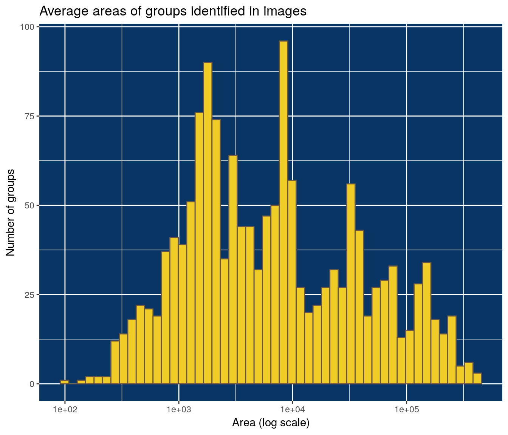

ad-couverture_de_moules.Rmd# load data
export_file <- system.file("data_orig/export_last.csv", package = "deeptools")
liste_photo <- system.file("data_orig/liste_photo.txt", package = "deeptools")mission2 <- read_csv(export_file) %>%
dplyr::select(-comment) %>%
tidyr::extract(name,
into = "datetime", regex = "_([[:digit:]]+).",
remove = FALSE
) %>%
mutate(datetime = ymd_hms(datetime, tz = "UTC")) %>%
# clean names of species
mutate(name_fr_clean = clean_vec(name_fr, unique = FALSE)) %>%
group_by(username) %>%
mutate(
user_id = paste(username, as.character(as.numeric(as.factor(datDeb))), sep = "-")
) %>%
ungroup()#> Parsed with column specification:
#> cols(
#> id = col_integer(),
#> image_id = col_integer(),
#> name = col_character(),
#> username = col_character(),
#> userlevel = col_integer(),
#> comment = col_character(),
#> datDeb = col_datetime(format = ""),
#> datFin = col_datetime(format = ""),
#> obs_code = col_character(),
#> name_fr = col_character(),
#> pos1x = col_integer(),
#> pos1y = col_integer(),
#> pos2x = col_integer(),
#> pos2y = col_integer(),
#> length = col_integer(),
#> middle_x = col_integer(),
#> middle_y = col_integer(),
#> polygon_values = col_character()
#> )#> Warning in rbind(names(probs), probs_f): number of columns of result is not
#> a multiple of vector length (arg 1)#> Warning: 305088 parsing failures.
#> row # A tibble: 5 x 5 col row col expected actual file expected <int> <chr> <chr> <chr> <chr> actual 1 100288 pos2x an integ… NULL '/usr/local/lib/R/site-library/deeptools… file 2 100288 pos2y an integ… NULL '/usr/local/lib/R/site-library/deeptools… row 3 100288 length an integ… NULL '/usr/local/lib/R/site-library/deeptools… col 4 100288 middle… an integ… NULL '/usr/local/lib/R/site-library/deeptools… expected 5 100288 middle… an integ… NULL '/usr/local/lib/R/site-library/deeptools…
#> ... ................. ... ........................................................................... ........ ........................................................................... ...... ........................................................................... .... ........................................................................... ... ........................................................................... ... ........................................................................... ........ ...........................................................................
#> See problems(...) for more details.Function to_carto extract and transform data as spatial object for following analyses.
# Filter on Buccinide only
MAR_mussel <- mission2_MAR %>%
filter(name_fr_clean == "couverture_de_moules")
# Filter and transform as spatial data
MAR_mussel_carto <- mission2_MAR %>%
filter(name_fr_clean == "couverture_de_moules") %>%
to_carto(name_fr_clean, "couverture_de_moules")Only because it is nice
ggplot(MAR_mussel_carto) +
geom_sf(aes(fill = as.character(image_id)), alpha = 0.1) +
guides(fill = FALSE)
#> # A tibble: 133 x 2
#> image_id n
#> <int> <int>
#> 1 14411 32
#> 2 14589 28
#> 3 14186 27
#> 4 14307 25
#> 5 14281 23
#> 6 14326 23
#> 7 14396 21
#> 8 14552 21
#> 9 14352 20
#> 10 14147 19
#> # … with 123 more rowsMAR_mussel %>%
group_by(image_id) %>%
summarize(n_users = length(unique(user_id))) %>%
arrange(desc(n_users))#> # A tibble: 133 x 2
#> image_id n_users
#> <int> <int>
#> 1 14186 2
#> 2 14190 2
#> 3 14281 2
#> 4 14307 2
#> 5 14326 2
#> 6 14329 2
#> 7 14352 2
#> 8 14387 2
#> 9 14396 2
#> 10 14411 2
#> # … with 123 more rowsfilter_col = username, filter_val = "grillus33", image_id == "14190"
#> # A tibble: 18 x 2
#> image_id n
#> <int> <int>
#> 1 14191 5
#> 2 14608 5
#> 3 14623 5
#> 4 14635 5
#> 5 14654 5
#> 6 14184 4
#> 7 14190 4
#> 8 14286 4
#> 9 14358 4
#> 10 14387 4
#> 11 14470 4
#> 12 14535 4
#> 13 14132 3
#> 14 14281 3
#> 15 14329 3
#> 16 14396 3
#> 17 14469 3
#> 18 14636 3
image_id = 14190
gg_users_image(x = MAR_mussel_carto,
image_id = 14190)
gg_users_image(x = MAR_mussel_carto,
image_id = 14190, buffer = 5)
As shown for “Buccinides”, only one function is required to determine the differents groups of annotations in all images. This requires function find_groups_in_all_images, some time of computation and RAM available.
# Chunk not evaluated in Rmd as results are saved
MAR_mussel_carto_groups <- MAR_mussel_carto %>%
find_groups_in_all_images(.progress = TRUE, keep_list = FALSE,
as_sf = FALSE, dist_buffer = 5)
if (!dir.exists(here::here("inst/outputs"))) {
dir.create("inst/outputs", recursive = TRUE)
}
readr::write_rds(
MAR_mussel_carto_groups,
here::here("inst/outputs", "MAR_mussel_carto_groups.rds"),
compress = "gz")outwd <- system.file("outputs", package = "deeptools")
MAR_mussel_carto_groups <- readr::read_rds(file.path(outwd, "MAR_mussel_carto_groups.rds"))As a reminder, a group of objects is supposed to be a unique individual.
# Number of objects per image (already known before)
mussel_nobjects <- MAR_mussel_carto_groups %>%
count(image_id) %>%
rename(n_objects = n) %>%
count(n_objects) %>%
arrange(desc(n)) %>%
rename(n_images = n)
# Number of marked objects by images
mussel_nobjects#> # A tibble: 24 x 2
#> n_objects n_images
#> <int> <int>
#> 1 11 19
#> 2 10 14
#> 3 12 14
#> 4 13 12
#> 5 14 8
#> 6 15 7
#> 7 4 6
#> 8 8 6
#> 9 9 6
#> 10 5 5
#> # … with 14 more rows# Plot
ggplot(mussel_nobjects) +
geom_col(aes(x = n_objects, y = n_images), width = 1,
fill = yellow, colour = grey) +
ggtitle("Total number of objects identified in images") +
xlab("Number of objects by image") +
ylab("Number of images") +
theme(panel.background = element_rect(fill = blue))
MAR_mussel_carto_groups_area <- MAR_mussel_carto_groups %>%
mutate(area = MAR_mussel_carto_groups %>%
st_sf() %>% st_area()) %>%
group_by(image_id, group_kept) %>%
summarise(nb_polygons_in_group = n(),
area_mean = mean(area),
area_sd = sd(area),
area_sd = if_else(is.na(area_sd), 0, area_sd),
area_cv = area_sd / area_mean) %>%
arrange(desc(nb_polygons_in_group))
MAR_mussel_carto_groups_area#> # A tibble: 1,508 x 6
#> # Groups: image_id [133]
#> image_id group_kept nb_polygons_in_group area_mean area_sd area_cv
#> <int> <chr> <int> <dbl> <dbl> <dbl>
#> 1 14186 1-16 2 1656. 211. 0.127
#> 2 14186 11-20 2 176066. 41803. 0.237
#> 3 14186 12-22 2 31141. 4061. 0.130
#> 4 14186 13-23 2 5800. 4407. 0.760
#> 5 14186 2-17 2 285. 159. 0.557
#> 6 14186 3-15 2 2379. 89.4 0.0376
#> 7 14186 4-18 2 1452 135. 0.0930
#> 8 14186 5-26 2 823. 9.55 0.0116
#> 9 14186 6-27 2 608. 319. 0.525
#> 10 14186 7-14 2 8050 142. 0.0177
#> # … with 1,498 more rowsMAR_mussel_carto_groups_area %>%
ggplot() +
geom_histogram(aes(area_mean), bins = 50,
fill = yellow, colour = grey) +
ggtitle("Average areas of groups identified in images") +
xlab("Area (log scale)") +
ylab("Number of groups") +
theme(panel.background = element_rect(fill = blue)) +
scale_x_log10()